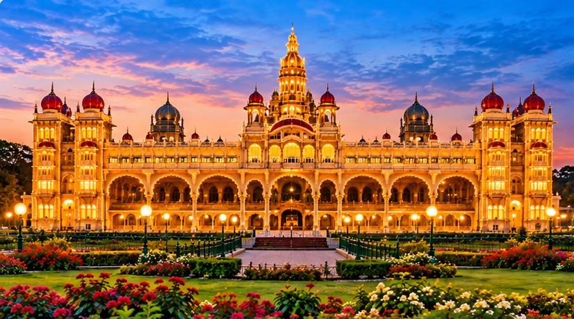
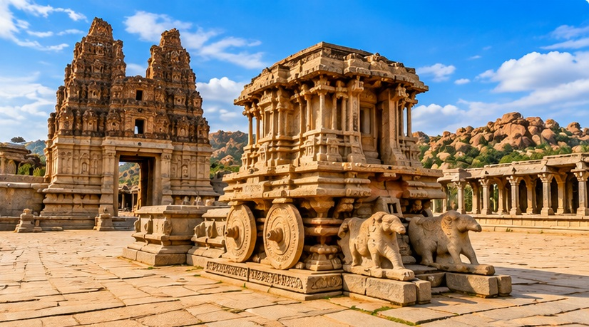
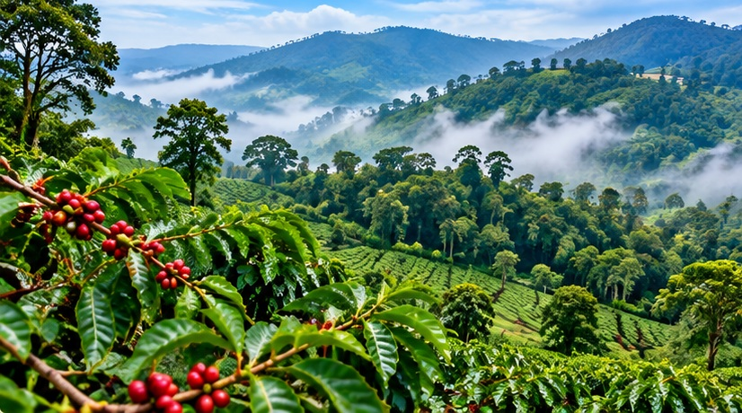
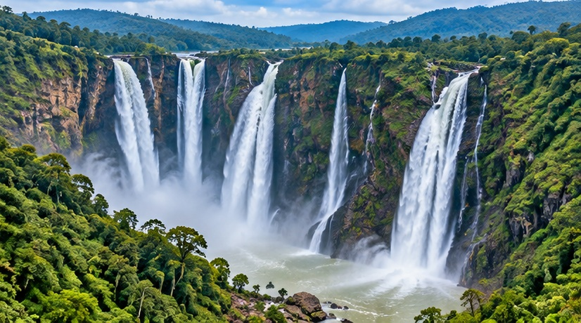

Mysore Palace

Mysore Palace is one of the most famous tourist attractions in Karnataka. It is known for its beautiful architecture and lighting.
Discover the Beauty, Culture and Heritage of Karnataka
Karnataka is a beautiful state located in the southern part of India. It is famous for its rich history, culture, beautiful landscapes and delicious food.
Karnataka has ancient temples, historical monuments, waterfalls, forests, beaches and hill stations. It is a wonderful destination for travellers.

Mysore Palace is one of the most famous tourist attractions in Karnataka. It is known for its beautiful architecture and lighting.

Hampi is a historical destination famous for its ancient temples, monuments and ruins.

Coorg is known for its green hills, coffee plantations and beautiful natural scenery.

Jog Falls is one of the famous waterfalls in Karnataka and is surrounded by beautiful natural scenery.
Chikmagalur is a popular hill station known for its coffee plantations, hills and pleasant climate.
Coorg is a scenic hill station surrounded by forests, coffee plantations and mountains.
Explore Karnataka is a simple tourism website created to provide information about the beautiful places, culture, food and heritage of Karnataka.
We aim to help travellers discover interesting destinations and plan their journey across Karnataka.
Karnataka can be explored by road, railway and air. Major cities such as Bengaluru, Mysuru and Mangaluru are well connected.